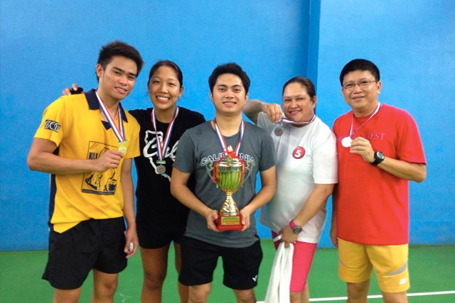
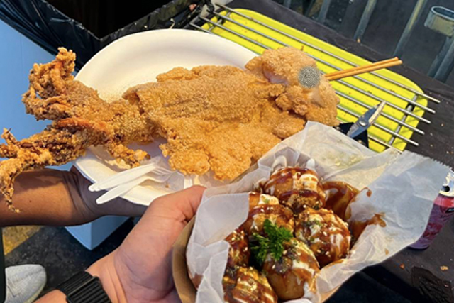
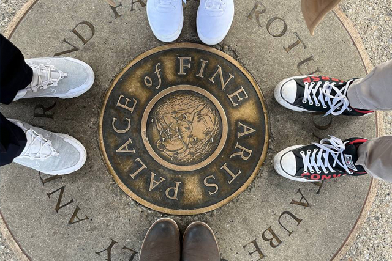

- Playing Badminton with friends 
- Eating food everywhere 
- Traveling anywhere 
All about me, Hello World!
Hey there, I'm Van, excited to share a bit about myself and some places that have left a lasting impression on my journeys. If you're seeking a familiar yet comforting experience, Starbucks coffee shops are a reliable go-to for a perfect cup of joe and a cozy ambiance. In my travels, Denmark's charm stole my heart with its picturesque landscapes and the historic beauty of places like Nyhavn in Copenhagen. Vietnam's vibrant culture and bustling cities like Hanoi offer an exhilarating blend of tradition and modernity. Now, when it comes to dining, Fogo de Chao's Brazilian churrasco experience is an absolute must for carnivores—it's an adventure for the taste buds! And if you're in the mood for a culinary masterpiece, Alexander's Steakhouse presents an exquisite fusion of flavors that'll linger in your memory long after the last bite. From sipping coffee at a familiar spot to delving into diverse cultures and cuisines, the world is brimming with incredible places waiting to be explored! |
MY HOBBIES: